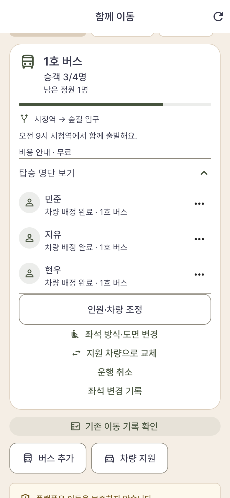
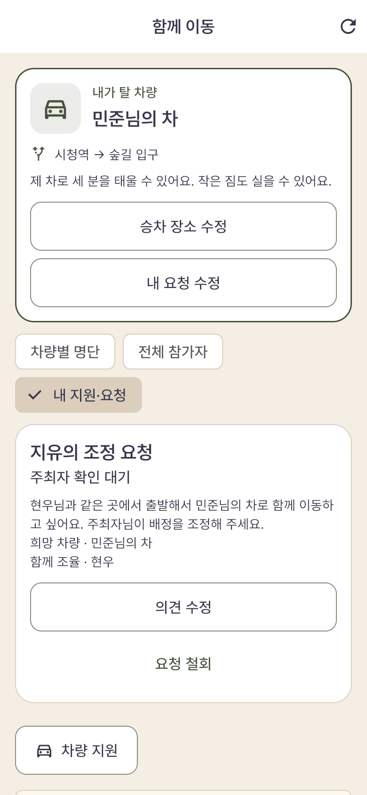
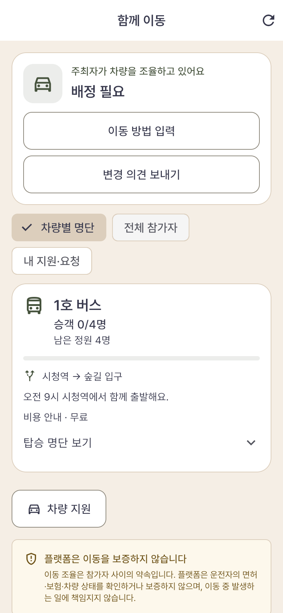
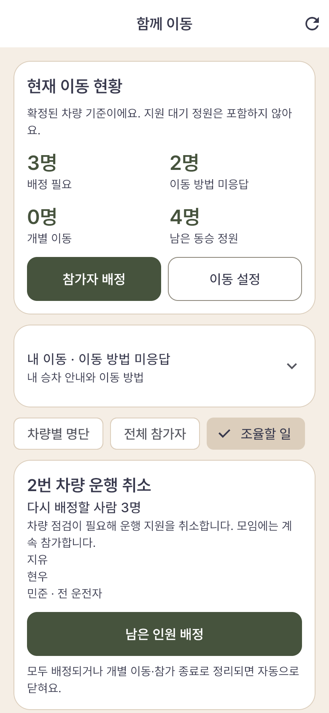
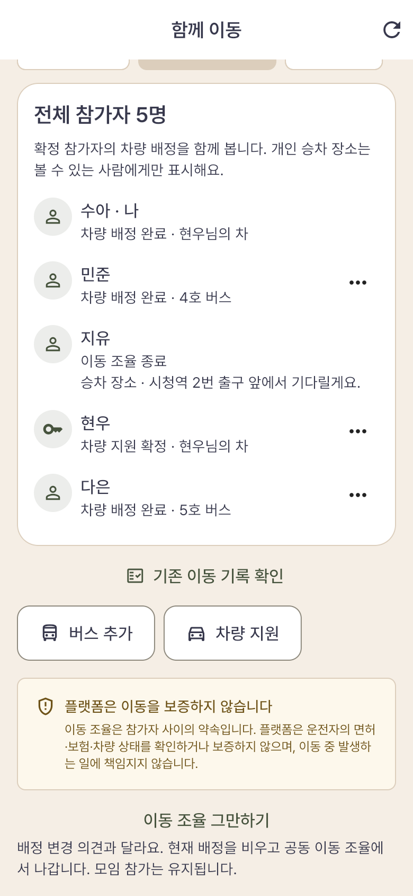
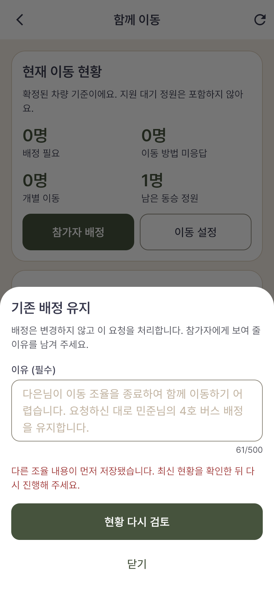
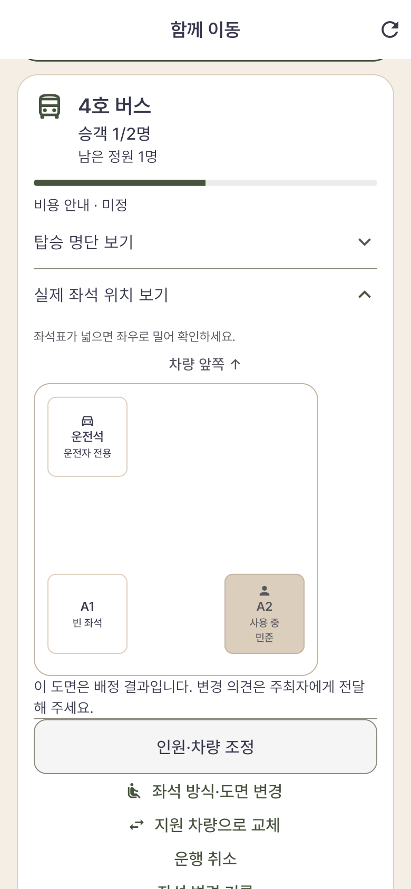
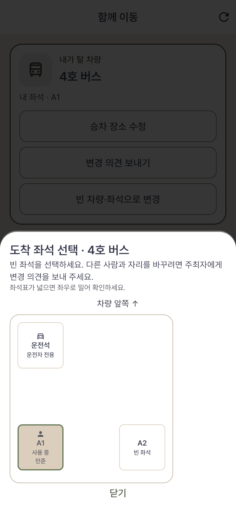

무엇을 보았고,
무엇을 더 확인해야 할까요?
사진이 있는 것, 실제 조작·저장 결과를 확인한 것, 실제 휴대전화와 외부 서비스를 확인한 것은 서로 다릅니다.
정산 확인 결과 · 새 차량 조율 실제 화면 · 전체 업무별 촬영 현황 · 확인한 문제와 다음 행동 · 전체 사진 바로 보기
모든 화면 캡처는 시험 계정의 실제 로컬 웹 실행 결과입니다. 앱에 넣은 표지·활동 사진 소재는 AI로 만들고 실제 파일 업로드 경로로 등록했습니다. 화면 자체를 합성한 것은 아닙니다. 세션을 준비해 시작했으므로 실제 로그인 검증도 아닙니다. 구현·자동 테스트·실제 환경의 출시 판단은 기능별 출시 상태를 따릅니다.
촬영한 이용 흐름과 다음 행동
이 표는 촬영을 시작한 묶음의 요약이며 전체 업무 목록이 아닙니다. 빠진 영역과 세부 업무는 21개 업무 영역의 전체 촬영 현황에서 확인합니다.
정산은 어디까지 확인됐나요?
직접 송금 방식으로 비용 입력 → 항목별 사람 선택 → 정산 시작 → 송금 안내 → 두 수취인의 입금 확인 → 완료까지 실제 로컬 앱에서 실행했습니다. 15장의 원본과 단계별 설명을 연결했습니다. 은행 송금 없이 가상 거래의 확인 기록만 저장한 결과입니다.
| 구분 | 확인한 범위 |
|---|---|
| 화면·연결 보완 | 개인별 보낼 돈·받을 돈·다음 행동, 항목별 결제자와 분담 대상, 입금 확인 권한과 남은 인원을 표시합니다. 회원의 송금 내역 접근 차단, 확인창에서 버튼이 멈추는 문제, 조회·갱신 오류를 수정했습니다. |
| 자동 테스트 | 정산·화면·경로 권한·버튼 동작 127개 통과, 변경 범위 정적 분석 통과. 정산 시작 직후의 요약 갱신은 자동 테스트로 확인했습니다. 앱 전체 테스트나 서버 전체 테스트 결과는 아닙니다. |
| 실제 로컬 앱 | 식사 30,000원은 세 명, 택시 60,000원은 두 명이 나눕니다. 민준은 지민·수아에게 각각 20,000원을 보내도록 표시됩니다. 지민의 확인 뒤 새로고침 없이 1/3 완료, 수아의 확인 뒤 3/3 완료와 서버 저장·회원 재진입을 확인했습니다. 정산 시작 직후 화면은 재진입해 촬영했습니다. |
| 실제 환경 확인 대기 | 서명한 Android·iPhone 앱, 실제 은행 내역 대조, 실제 알림 전달은 확인하지 않았습니다. 포인트·혼합 납부와 실제 돈 이동은 실행하지 않았으며 출시 제한도 변경하지 않았습니다. |
다음 코드 보완: 기존 비용을 수정할 때 원래 분담 대상을 불러오도록 서버 응답과 편집 화면을 연결해야 합니다. 현재는 서버 응답에 배분 내역이 없어 사용자가 다시 선택하도록 안내합니다. 저장이 실패해도 입력 내용이 남도록 보완하는 일도 남았습니다.
다음 이용 확인: 항목별 분담금 납부 방식의 완료, 영수증 첨부·열람, 재안내·기한 연장·이의·일괄 확인·취소·환불을 각각 실행하고 결과를 남겨야 합니다. 직접 송금의 자동 완료된 분담 내역은 계산 기준일 뿐이며, 실제 송금 완료와 구분해 표시합니다.
새 차량 조율은 실제로 어떻게 동작하나요?
새 시험 모임에서 실제 앱 조작과 서버 저장을 대조한 화면입니다. 휴대전화가 아닌 390×844 크기의 웹 실행이며, 로그인은 시험 세션으로 시작했습니다. 아래 여섯 장은 기존 촬영 통계와 별도로 추가했습니다.
{kind=link}

주최자가 차량별로 배정
주최자가 세 명을 함께 배정했습니다. 자리 번호가 아니라 사람과 차량을 기준으로 보고, 버스 승객 3명·남은 정원 1명이 서버 저장과 일치했습니다.
{kind=link}

의견을 보내도 배정은 유지
참가자는 함께 이동할 사람과 희망을 전달합니다. 요청만으로 자리가 비워지지 않으며 주최자가 처리할 때 배정이 바뀝니다.
{kind=link}

운행을 취소한 운전자도 재배정
모임에 남은 전 운전자와 승객 두 명 모두 배정 필요로 바뀌었습니다. 자동으로 개별 이동 차량을 만들지 않았습니다.
{kind=link}

취소 차량의 사람을 빠짐없이 조율
주최자는 남은 세 명을 한 화면에서 다시 배정합니다. 이후 세 명을 버스로 옮기자 묶음이 자동 종료됐고 처리 기록은 보존됐습니다.
{kind=link}

정원 감소와 승객 이동을 함께 저장
버스 정원을 두 명에서 한 명으로 줄이면서 초과 승객을 다른 버스로 옮겼습니다. 정원과 배정이 함께 반영됐고, 전체 명단에서 각자의 차량을 확인했습니다.
{kind=link}

저장이 거절돼도 입력은 유지
다른 조정이 먼저 저장되면 내용을 덮어쓰지 않습니다. 입력한 사유를 보존하고 다시 검토하도록 안내합니다. 사진은 거절 직후이며, 이후 재검토와 저장 성공도 확인했습니다.
공동 주최자의 차량 교체, 허용된 본인 이동과 허용 종료, 개인 장소 공개 범위·안전 신고·조율 종료도 확인했습니다. 지원 수정·철회·미승인, 의견 수정·철회·반려, 만석 맞교환과 의견 제출 뒤 관련자 종료 안내, 배정 전 이동 의사와 개별 이동 선택도 확인했습니다. 주최자의 배정 해제·배정 후 개별 이동 조정·참가 및 모임 종료 경로, 휴대전화·실제 푸시·도면의 실차 대조는 남았습니다. 현재 결과와 다음 확인을 참고하세요.
좌석 지정과 변경은 이렇게 보입니다
가상 도면을 사용하는 실제 앱·서버 연결 화면입니다. 카풀의 좌석 지정과 차량별 배정 사이 전환, 버스 좌석 지정, 다른 도면으로 변경한 뒤 탑승자 유지, 허용된 참가자의 본인 좌석 이동을 확인했습니다. 실제 차량의 배치를 검증한 사진은 아닙니다.
{kind=link}

차량 탑승과 세부 좌석을 따로 관리
좌석 지정으로 바꿔도 탑승자는 유지됩니다. 운전석·통로는 승객이 선택할 수 없고, 도면에 있는 빈 공간도 그대로 표시합니다.
{kind=link}

허용된 참가자는 본인의 빈 좌석으로 이동
주최자가 허용한 경우만 열립니다. 다른 사람을 옮기거나 자리를 빼앗을 수 없으며, 맞교환이 필요하면 주최자에게 변경 의견을 보냅니다.
관리자 웹에서도 사용된 원본의 수정 차단, 복제본의 좌표 편집과 사용 시작을 확인했습니다. 시험 도면만 사용했으며 실제 사용할 차량과의 대조는 남아 있습니다.
관리자에서도 같은 처리 결과를 확인했습니다
앱과 같은 새 시험 모임을 실제 관리자 서버에 연결했습니다. 요청 내용·처리 사유·취소 후 재배정의 자동 종료가 저장 결과와 일치했습니다. 개인 승차 장소는 가렸으며, 조회 권한이 없는 계정은 기록을 볼 수 없습니다. 관리자가 대신 배정하는 기능을 추가한 것은 아닙니다.
요청과 주최자의 처리 사유 — 실제 관리자 화면 · 이동 의사·개인 장소 비공개·재배정 완료 — 실제 관리자 화면
{kind=link}
{kind=link}
이미 배정된 사람의 참여 의사를 ‘배정 필요’로 오해하지 않도록 ‘함께 이동’으로 고쳤습니다. 위 두 사진은 관리자 웹이며, 휴대전화·실물 도면·좌석 전환을 확인한 사진은 아닙니다.
기존 카풀 사진과 구분해 주세요
기존 코드의 촬영 기록입니다. 좌석 비지정 방식에서 운전자 제안 → 주최자 승인 → 탑승자 자리 확정 → 주최자 명단 반영까지 확인했습니다. 탑승자의 내 자리와 주최자의 탑승자 명단은 앞으로 적용할 주최자 최초 배정 화면이 아닙니다.
서버의 응답 변환을 수정한 뒤 회원의 2번 내 좌석과 탑승 2/7명, 주최자의 1번 수아·2번 민준 명단을 확인했습니다. 앱을 다시 열어도 유지됩니다. 서버 이동 검사 116개와 앱 검사 76개도 통과했습니다.
새 차량 조율의 실제 화면은 위에서 확인할 수 있습니다. 아래 전체 사진 목록의 기존 카풀·좌석 사진을 새 주최자 배정이나 실물 도면의 검증 근거로 사용하지 않습니다.
사진에서 확인한 개선점
먼저 남은 보완을 표시합니다. 수정하고 다시 확인한 항목은 아래에 접어 두었으며, 기능 전체가 미구현이라는 뜻은 아닙니다.
촬영 원본과 확인 범위
입력 중인 화면은 저장 성공의 근거가 아닙니다. 처리 결과를 확인한 사진에만 그 범위를 적습니다.
검수 기준
- 제목·핵심 정보·버튼이 구분되고 글자 잘림이나 겹침이 없는가?
- 날짜·금액·인원·점수·도장 수가 처리 전후 화면과 저장 결과에서 일치하는가?
- 회원과 운영자에게 맞는 버튼이 보이고, 실패 시 이유와 다음 행동이 안내되는가?
- 사진·아이콘·그래픽이 기능을 설명하고 다른 화면과 일관된가?